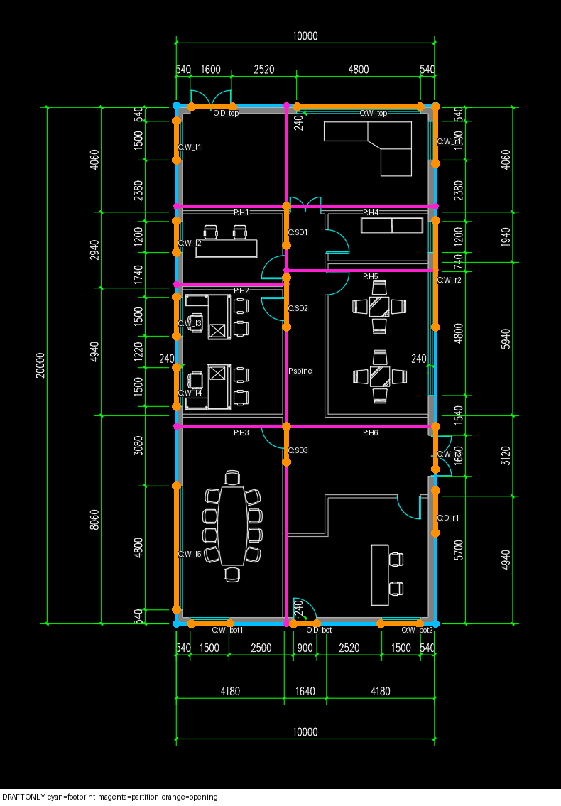

draft_001
polygonize produced dangles: [{'partition_ids': ['H5'], 'pixel_points': [[480.0, 380.0], [613.0, 380.0]]}]两份原始错误完整保留。这里仅显示模型曾声明的墙和开口，不是修正后的BIM，也不是新生成结果。
polygonize produced dangles: [{'partition_ids': ['H5'], 'pixel_points': [[480.0, 380.0], [613.0, 380.0]]}]opening D_top at pixels [269.0, 150.0] -> [327.0, 150.0] requires one exterior or two interior full-boundary hosts; found []
